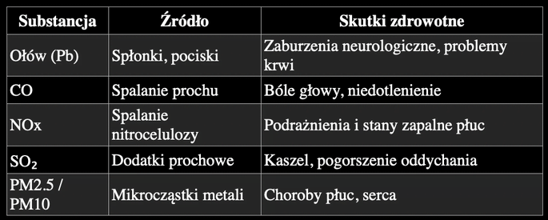
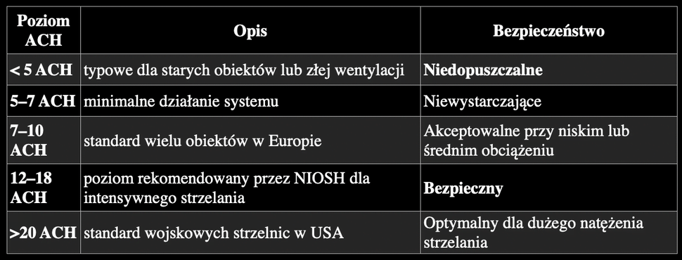
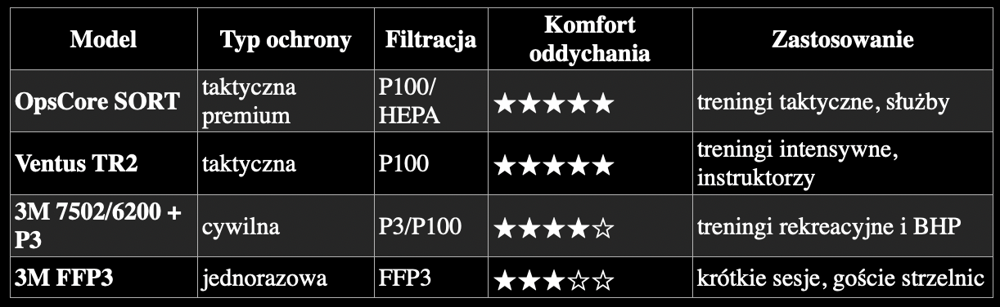

Wstęp
Strzelanie w pomieszczeniach zamkniętych, zarówno na strzelnicach komercyjnych, jak i w obiektach wojskowych czy policyjnych, generuje szereg zanieczyszczeń powietrza, które stanowią realne, udokumentowane zagrożenie zdrowotne. Choć większość użytkowników strzelnic jest świadoma hałasu i konieczności ochrony słuchu, to zagrożenia chemiczne oraz aerozole powystrzałowe (GSR, gunshot residue) wciąż są często niedoceniane lub wręcz ignorowane.
Najważniejsze zanieczyszczenia powietrza powstające podczas strzału to:
- metale ciężkie (głównie ołów, antymon, miedź, cynk)
- cząstki PM10/PM2.5 i ultradrobne (UFP)
- tlenek węgla (CO) i tlenki azotu (NOx)
- lotne związki organiczne (VOCs)
- gazy i cząstki pochodzące ze spłonek i prochu bezdymnego
Ich stężenie zależy od intensywności strzelania, konstrukcji broni, rodzaju amunicji, a przede wszystkim od wydajności systemów wentylacji i przestrzegania procedur higienicznych.
1. Co powstaje w momencie strzału?
1.1. Metale ciężkie
Najbardziej udokumentowanym ryzykiem jest ekspozycja na ołów (Pb), który wciąż występuje w spłonkach, części pocisków i w mikropyłach generowanych przez tarcie pocisku o przewód lufy. Wraz z ołowiem w aerozolach pojawiają się:
- antymon (Sb): składnik spłonek
- miedź (Cu): płaszcz pocisku
- cynk (Zn): składnik niektórych stopów
- bar (Ba): w GSR przy niektórych typach amunicji
Metale te występują we frakcjach PM10, PM2.5 oraz frakcji ultradrobnej (<100 nm), która jest szczególnie niebezpieczna, gdyż potrafi przenikać przez barierę pęcherzykowo-naczyniową.
1.2. Związki gazowe
- tlenek węgla (CO): efekt niepełnego spalania prochu
- tlenki azotu (NO, NO₂): drażnią błony śluzowe, mogą powodować obrzęk płuc
- dwutlenek siarki (SO₂): w niewielkich ilościach, zależnie od prochu
- VOCs: lotne węglowodory aromatyczne i nitrozwiązki
Przy intensywnym strzelaniu CO może osiągać poziomy przekraczające normy BHP.
1.3. Cząstki stałe i ultradrobne
Każdy strzał generuje chmurę pyłu zawierającą sadze, nierozłożony proch, mikrofragmenty płaszcza pocisku i pozostałości spłonki. Największe ryzyko stanowią cząstki UFP (ultrafine particles) o średnicy poniżej 0,1 mikrometra: przenikają głęboko do płuc, mogą przechodzić do krwiobiegu i wiążą metale ciężkie, transportując je do tkanek.
2. Skutki zdrowotne narażenia
2.1. Ekspozycja na ołów
Ołów kumuluje się w tkankach, a jego skutki są szczególnie groźne dla układu nerwowego. Udokumentowane efekty:
- zaburzenia neurologiczne i poznawcze
- nadciśnienie i zwiększone ryzyko incydentów sercowo-naczyniowych
- zaburzenia hormonalne
- spadek funkcji nerek
W wielu raportach stwierdzono podwyższony poziom ołowiu we krwi (BLL) u instruktorów prowadzących zajęcia codziennie, pracowników strzelnic, funkcjonariuszy służb mundurowych oraz strzelców sportowych korzystających z obiektów zamkniętych.
2.2. Choroby układu oddechowego
Ekspozycja na pyły i NOx powoduje przewlekłe zapalenia dróg oddechowych, astmę zawodową (udokumentowane przypadki), większe ryzyko infekcji i obniżenie pojemności płuc.
2.3. Krótkoterminowe objawy po sesji strzeleckiej
Nawet jednorazowa intensywna sesja może wywołać bóle głowy, podrażnienie spojówek, metaliczny posmak w ustach, kaszel i duszność oraz zmęczenie i zaburzenia koncentracji.
3. Znaczenie wentylacji: kluczowy element bezpieczeństwa
Wentylacja jest najważniejszym czynnikiem ograniczającym ekspozycję. Niewłaściwa wentylacja potrafi zwiększyć poziom zanieczyszczeń nawet 20-krotnie.
Normy OSHA/NIOSH
- Minimalna prędkość przepływu powietrza w kierunku tarcz: 0,3-0,4 m/s
- Strumień powietrza od stanowiska strzelca w stronę tarczy, bez zawirowań
- Filtracja HEPA klasy H13 lub wyższej
Normy europejskie
W UE nie ma jednego spójnego dokumentu, ale większość krajów przyjmuje wartości podobne do NIOSH. Zalecane: ciągły przepływ powietrza w osi strzeleckiej, system wyciągowy przy tarczy i nawiewowy za plecami strzelca.
3.1. Wymiany powietrza (ACH)
ACH (Air Changes per Hour) określa, ile razy powietrze w pomieszczeniu jest wymieniane w ciągu godziny. Rekomendowane minimum według przeglądu norm OSHA/NIOSH i praktyki komercyjnych strzelnic: 10-12 ACH, a dla obiektów intensywnych 15-20 ACH.
4. Ochrona dróg oddechowych
W przypadku braku pewności co do wentylacji lub pracy w warunkach intensywnego zadymienia konieczna jest ochrona dróg oddechowych. Poniżej zestawienie trzech grup sprzętu.
4.1. Maski taktyczne klasy premium

SORT Respirator, Ops-Core (Gentex): maska zaprojektowana dla użytkowników wojskowych. Filtracja klasy P100/HEPA, niski opór oddychania, kompatybilność z hełmami, ochroną słuchu i systemami komunikacji, wkłady odpylające i chemiczne. Zalety: najwyższa skuteczność filtracji, stabilność podczas biegu, minimalne parowanie okularów. Wady: wysoka cena, ograniczona dostępność w Europie.

VENTUS Respiratory TR2: profesjonalny respirator taktyczny, często wybierany przez instruktorów i operatorów. Filtracja P100, modułowy system filtrów, bardzo niski opór oddychania, świetna kompatybilność z płytami balistycznymi i hełmami. Zalety: jeden z najlepszych stosunków oddychalność/skuteczność na rynku, doskonały do długich sesji w halach. Wady: wyższa cena niż systemy cywilne, wymaga okresowej konserwacji.
4.2. Rozwiązania budżetowe: 3M i podobne

Dla strzelców cywilnych i hobbystów doskonałym rozwiązaniem są półmaski z filtrami 3M: 7502 / 6200 z filtrami P3/P100, seria 6000, oraz jednorazowe 3M Aura FFP3. Zalety: bardzo niska cena, wysoka skuteczność filtracji cząstek stałych, prosta obsługa i dostępność. Wady: brak kompatybilności z hełmami i niektórymi ochronnikami słuchu, większe parowanie okularów, mniejsza stabilność w dynamice.
5. Rekomendacje praktyczne dla strzelców i instruktorów
5.1. Jak ocenić wentylację strzelnicy?
- Powietrze powinno wyczuwalnie płynąć od strzelca w kierunku tarczy
- Bez zawirowań i cofania powietrza
- Temperatura i zapach spalin nie powinny rosnąć podczas strzelania
- Strzelnica powinna udostępniać dane ACH lub pomiary przepływu
5.2. Kiedy absolutnie należy używać maski?
- Podczas strzelania w tunelach i wąskich osiach
- Przy dużej liczbie strzelców na osi
- Przy słabej wentylacji
- Podczas czyszczenia osi strzeleckich i stanowisk
5.3. Której amunicji unikać w pomieszczeniach?
- Amunicji ołowiowej bez płaszcza (lead exposed base)
- Amunicji z agresywnymi chemicznie spłonkami (np. Barnaul, wojskowa 7,62×39)
- Zalecana: amunicja z pełnym płaszczem (FMJ) lub non-toxic (NT)
5.4. Procedury higieniczne po strzelaniu
- Myj ręce po każdej sesji. Na rękach osadzają się szkodliwe związki i metale ciężkie; kontakt z jedzeniem lub piciem przed umyciem rąk może prowadzić do ciężkich zatruć
- Zmieniaj i pierz odzież po intensywnym treningu. Jeśli ubrania „śmierdzą strzelnicą”, to właśnie przez osiadające na nich substancje
- Czyść broń w dobrze wentylowanym pomieszczeniu; do substancji powystrzałowych dochodzą środki czystości, które również mogą zawierać toksyczne związki
- Instruktorzy i pracownicy strzelnic: regularne badania poziomu ołowiu we krwi
6. Podsumowanie
Strzelanie w pomieszczeniach zamkniętych generuje liczne zanieczyszczenia (metale ciężkie, cząstki stałe i gazy), które mogą prowadzić do poważnych konsekwencji zdrowotnych. Odpowiednia wentylacja, maski ochronne i właściwa higiena to kluczowe elementy minimalizacji ryzyka. Zastosowanie ochrony dróg oddechowych, niezależnie czy jest to taktyczna maska SORT/TR2, czy budżetowa 3M, znacząco zmniejsza ekspozycję na aerozole powystrzałowe.